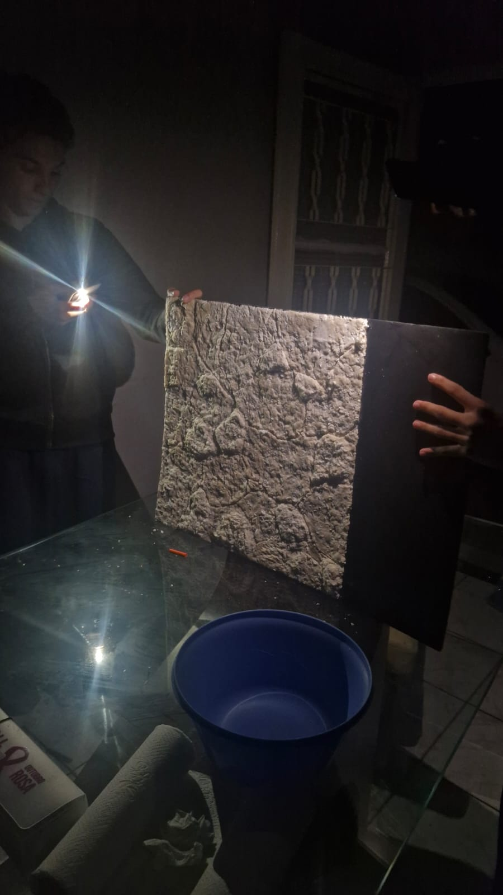

Scaneamento da Obra
Acervo Digital


Recriando a textura do tempo. O uso de materiais contemporâneos para simular o registro mais antigo da presença humana na Terra.
Muito antes da escrita, a arte rupestre foi o alvorecer da nossa comunicação. Utilizando pigmentos minerais escarlates, como a hematita e o ocre, as paredes das cavernas se tornaram os primeiros museus da humanidade.
Para este projeto escolar, não queríamos apenas ilustrar o passado. Decidimos construir a própria rocha, forjando em casa uma superfície idêntica às paredes calcárias exploradas pelos nossos ancestrais.
Para simular a crosta e as fraturas irregulares de uma caverna, utilizamos a técnica de papietagem. A mistura dos quatro elementos abaixo cria uma argamassa orgânica que, ao secar, calcifica-se perfeitamente.
Base de celulose. Fornece volume estrutural e causa o efeito "craquelado" natural.
O solvente. Essencial para quebrar as fibras do papel antes da mistura.
A liga química (Cola Branca). Une as partículas garantindo resistência de pedra.
O espessante. Preenche os microporos fechando a textura da falsa rocha.
